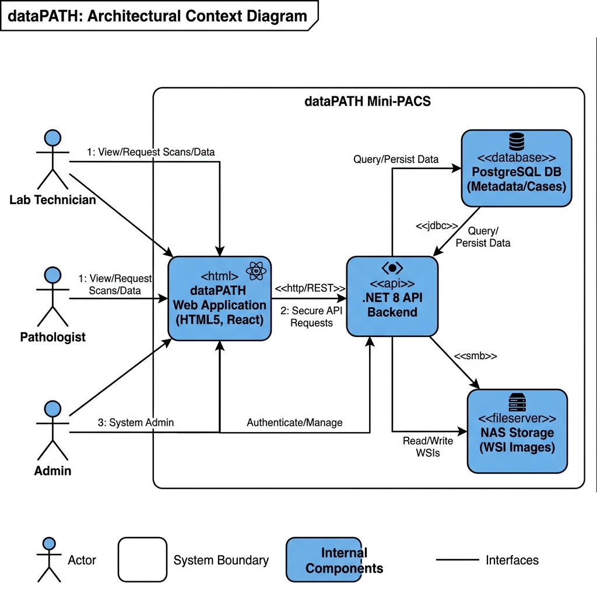
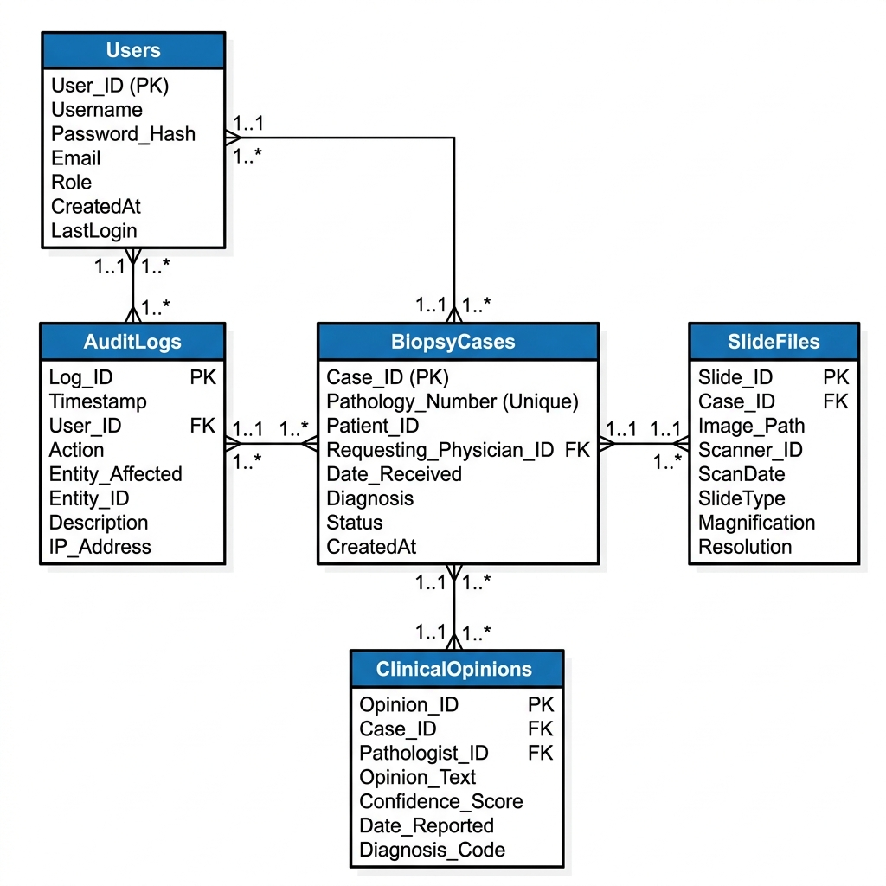

O dataPATH é um sistema médico de Patologia Digital do tipo Mini-PACS projetado para o armazenamento seguro, visualização interativa e compartilhamento de lâminas histopatológicas em altíssima resolução (WSI — Gigapixel). O sistema opera em conformidade rigorosa com a LGPD (Lei nº 13.709/2018), pseudonimizando dados clínicos de pacientes e permitindo a captação de parceiros acadêmicos para reserva de equipamentos científicos (Scanner 3DHISTECH e Real Time 7500 PCR).
| Perfil | E-mail de Acesso | Senha Padrão | Escopo de Permissões |
|---|---|---|---|
| Técnico de Laboratório | maria.silva@datapath.local |
DataPath@2026 |
Cadastro de casos biópticos anonimizados, upload de arquivos WSI e gestão de parceiros. |
| Médico Patologista | carlos.mendes@datapath.local |
DataPath@2026 |
Análise de lâminas gigapixel no WSI Viewer, emissão de pareceres de 2ª opinião e assinatura digital. |
| Administrador | admin@datapath.local |
DataPath@2026 |
Acesso irrestrito a todas as funcionalidades, governança, trilha de auditoria LGPD e gestão de onboarding. |
Arquitetura em camadas e serviços integrados do ecossistema dataPATH:

Estrutura relacional de tabelas e cardinalidades no PostgreSQL 16:

Interface médica desenvolvida para análise detalhada de tecidos e tomada de decisão diagnóstica:
1 px ≈ 0,25 µm), fixar notas e centralizar.